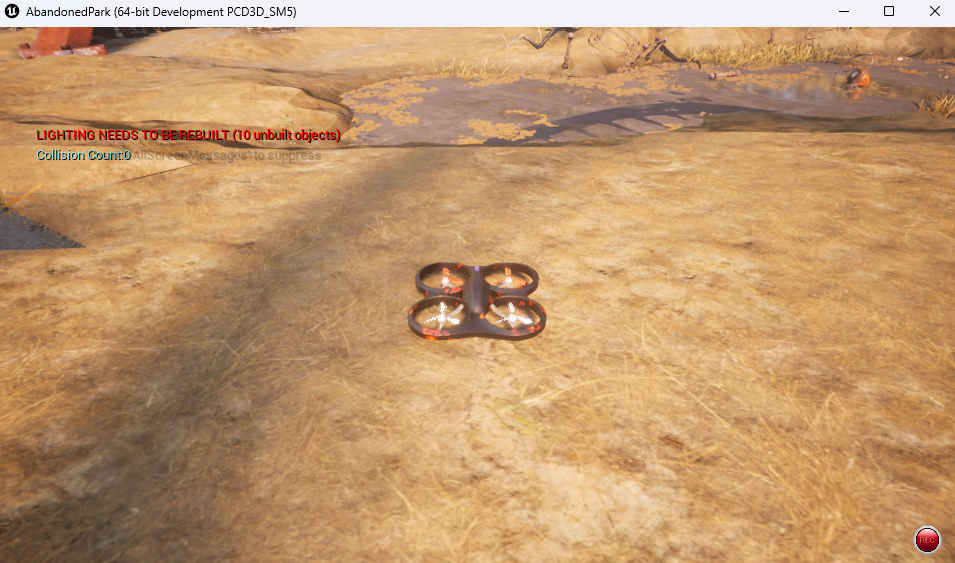
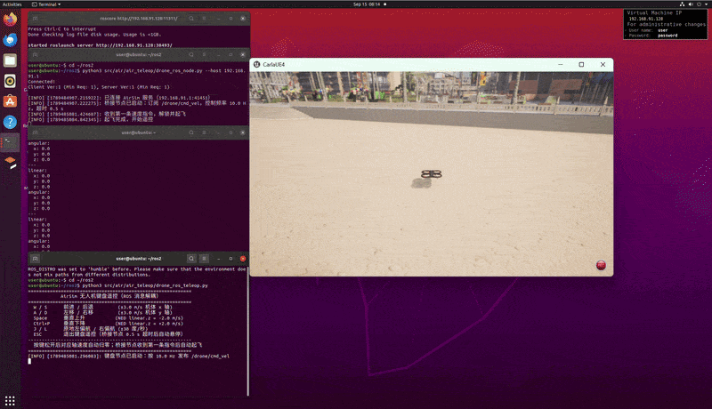
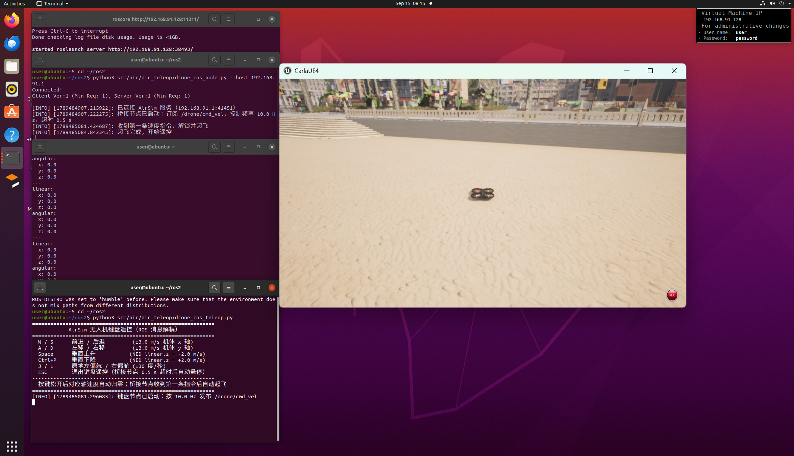
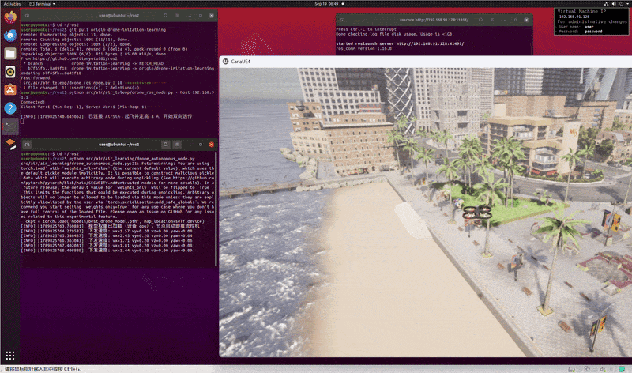

基于 ROS 消息解耦的无人机键盘遥控
本文介绍如何通过键盘遥控 Windows 宿主机上 AirSim 仿真环境中的多旋翼无人机。与直接在脚本中调用
AirSim 客户端不同，本方案将键盘输入与仿真器控制拆分为两个独立的 ROS 节点，二者之间只通过
/drone/cmd_vel 话题（geometry_msgs/Twist）交换数据，从而实现消息层面的解耦。
代码位于 src/air/air_teleop/ 目录：
| 文件 | 节点名 | 职责 |
|---|---|---|
drone_ros_teleop.py |
drone_ros_teleop |
用 termios 原始模式监听键盘（tty.setraw），按 10 Hz 把当前按键状态发布为 Twist 消息 |
drone_ros_node.py |
drone_ros_node |
订阅 /drone/cmd_vel，经 AirSim RPC 驱动无人机；另以独立后台线程抓取前置相机图像，缩放后发布 /drone/front_camera/image_raw |
双节点架构
两个节点都运行在虚拟机的 ROS 主控上，只有桥接节点与宿主机上的 AirSim 发生网络通信。解耦带来的好处：
- 键盘节点不关心仿真器细节，桥接节点不关心输入设备；
- 更换输入方式（摇杆、路径规划器等）时，只需向
/drone/cmd_vel发布同格式的消息； - 任一节点异常退出都不影响另一节点的安全收尾（详见下文安全机制一节）。
坐标系约定
AirSim 使用 NED 坐标系：x 轴指向前方、y 轴指向右侧、z 轴指向地面。因此 /drone/cmd_vel
中的消息内容按 NED 机体坐标系解释：
| Twist 字段 | 含义 | 备注 |
|---|---|---|
linear.x |
机体 x 轴线速度（m/s） | 正值前进 |
linear.y |
机体 y 轴线速度（m/s） | 正值右移 |
linear.z |
机体 z 轴线速度（m/s） | 负值上升、正值下降 |
angular.z |
偏航角速度（rad/s） | 正值右偏航（顺时针，从上方看） |
安装依赖
# 拉取仓库并进入仓库根目录
git clone https://github.com/OpenHUTB/ros2.git
cd ros2
# 安装两个节点运行所需的依赖（airsim）
python -m pip install -r src/requirements.txt安装 rospy 运行环境
两个节点均基于 rospy 编写，若新环境中仅按上述步骤安装依赖，运行节点时可能报错：
ModuleNotFoundError: No module named 'rospy'此时需补齐 ROS 的 Python 运行环境，依次执行：
sudo apt-get install python3-roslib
pip install rospkg
pip install catkin-tools
source /opt/ros/noetic/setup.bash
python -c "import rospy" # 无报错即表示 rospy 可用若 AirSim 客户端连接报 numpy 相关错误，请参考建立虚拟机和空域载具之间的连接
安装兼容版本的 numpy 与 msgpack-rpc-python。
启动步骤
1. 启动宿主机上的 AirSim 模拟器
在 Windows 宿主机上运行（以 AbandonedPark 场景为例）：
cd AbandonedPark\WindowsNoEditor\
AbandonedPark.exe
2. 在虚拟机中启动 ROS 主控
source /opt/ros/noetic/setup.bash
roscore3. 启动桥接控制节点
另开一个终端，--host 后面填宿主机（Windows）的 IP 地址（通过 ipconfig 查看）：
source /opt/ros/noetic/setup.bash
python src/air/air_teleop/drone_ros_node.py --host 172.21.108.47注意
桥接节点必须能访问宿主机 AirSim RPC 服务的 41451 端口。连接失败时请检查：
宿主机防火墙是否放行 41451 端口；虚拟机网络模式（NAT/桥接）下能否 ping 通宿主机 IP。
宿主机 IP 一般和这里的 172.21.108.47 不一致，以 ipconfig 实际输出为准。
4. 启动键盘发布节点
再开一个终端：
source /opt/ros/noetic/setup.bash
python src/air/air_teleop/drone_ros_teleop.py桥接节点收到第一条速度指令后会自动解锁、起飞并进入遥控状态，模拟器窗口中可以看到无人机起飞：

实飞效果
按上述步骤启动后，在键盘节点窗口中按住 W/A/S/D 等按键即可遥控无人机，
完整实飞演示见下方动图：

实飞过程中的模拟器画面截图：

参数配置
桥接节点同时支持命令行参数与 ROS 私有参数，命令行参数优先级更高：
| 命令行参数 | 私有参数 | 默认值 | 说明 |
|---|---|---|---|
--host |
~host |
127.0.0.1 |
宿主机（AirSim 服务）IP 地址 |
--port |
~port |
41451 |
AirSim RPC 端口 |
--vehicle |
~vehicle |
"" |
载具名称，空串表示通过 listVehicles() 自动获取第一架载具（失败回退 SimpleFlight） |
| — | ~timeout |
0.5 |
无指令超时时间（s），超时自动悬停 |
| — | ~rate |
10.0 |
控制频率（Hz） |
| — | ~camera |
front_center |
前置相机名称 |
| — | ~camera_rate |
10.0 |
图像发布频率（Hz，推荐 8~10） |
--camera-width |
~camera_width |
320 |
发布图像最大宽度（像素），原图超限时缩小 |
--camera-height |
~camera_height |
180 |
发布图像最大高度（像素），原图超限时缩小 |
桥接节点另以独立后台线程抓取前置相机图像（默认 10 Hz），抓图使用独立的 AirSim
客户端，耗时 RPC 不会阻塞 10 Hz 的飞行控制循环；原图超过 320×180 时会先缩小再发布到
/drone/front_camera/image_raw，降低跨机网络传输与内存开销（供任务四数据采集使用）。
通过参数服务器设置私有参数的示例（效果与 --host 相同）：
rosparam set /drone_ros_node/host 172.21.108.47
python src/air/air_teleop/drone_ros_node.py键位映射
| 按键 | 功能 | NED 指令 |
|---|---|---|
W / S |
前进 / 后退 | vx = ±3.0 m/s |
A / D |
左移 / 右移 | vy = ∓3.0 m/s |
Q / E |
左前方 / 右前方 | vx = +3.0, vy = ∓2.5 m/s |
Z / C |
左后方 / 右后方 | vx = -3.0, vy = ∓2.5 m/s |
J / L |
左偏航 / 右偏航 | angular.z = ∓0.5 rad/s |
Space / X |
上升 / 下降 | vz = -2.0 / +2.0 m/s |
K |
强制急刹 | 全 0 速度 |
ESC / Ctrl+C |
退出键盘遥控 | 停止发布，桥接节点超时后自动悬停 |
提示：
- 键盘节点通过
tty.setraw进入原始模式：关闭字符回显、单字符非阻塞监听（无需按 Enter，即按即发）； - 终端按键无法多键并发，斜向飞行由复合按键
Q/E/Z/C直接给出整组速度指令； - 原始模式下探测不到按键松开事件，改为“按住窗口”：每次按下刷新最近按键时刻，0.4 s 无新按键即以最后指令速度为起点线性衰减 0.5 s 至 0（平滑悬停，避免硬刹触发飞控制动阻尼），等效于松开按键；
- 无任何按键时持续发布全零指令，无人机原地保持；
- 按键监听基于标准输入（stdin），虚拟机桌面终端与 SSH 终端均可运行，不再依赖
pynput。
安全机制
- 自动起飞：桥接节点收到第一条速度指令时解锁电机并爬升到安全高度；
- 超时悬停：连续 0.5 s 未收到任何指令（键盘节点退出、网络中断等）时自动悬停；
- 安全退出：桥接节点退出（
Ctrl+C或rosnode kill）时，通过rospy.on_shutdown回调先悬停、再调用enableApiControl(False)释放 AirSim API 控制权； - 键盘节点按
ESC退出后，桥接节点因超时自动悬停，无需手工干预。
验证话题
source /opt/ros/noetic/setup.bash
rostopic list # 应能看到 /drone/cmd_vel
rostopic echo /drone/cmd_vel # 按住 W 键可看到 linear.x = 3.0常见问题
- 连接宿主机失败：检查
--host是否为宿主机 IP、宿主机防火墙是否放行 41451 端口； - 键盘无响应：确认键盘节点在终端中直接运行（SSH 或虚拟机桌面终端均可），stdin 未被重定向，且该窗口获得焦点；若屏幕回显按键字符说明原始模式未生效，请确认在 Linux/macOS 环境运行；
- 无人机无动作：用
rostopic echo /drone/cmd_vel确认话题有消息，并确认桥接节点日志中已打印“已连接 AirSim 服务”。
端到端视觉行为克隆自主巡航 (air_learning)
本节介绍基于行为克隆（Behavior Cloning）的无人机端到端单目视觉自主巡航方案：用轻量级卷积
神经网络直接建立「前视图像 → 飞控速度指令」的映射，替代手工设计的感知-规划-控制流水线。相关代码
位于 src/air/air_learning/ 目录，沿用上文的 drone_ros_node 桥接节点以及
/drone/front_camera/image_raw、/drone/cmd_vel 两个话题。
效果展示

环境依赖
| 依赖 | 用途 |
|---|---|
PyTorch (torch) |
策略网络 DronePolicyNet 的定义、训练与 CPU/GPU 推理 |
| torchvision | 图像预处理与数据集加载（src/requirements.txt 中已声明） |
OpenCV (opencv-python) / cv_bridge |
相机图像编解码，/drone/front_camera/image_raw 与 numpy 互转 |
AirSim (airsim) |
与宿主机 AirSim 仿真器的 RPC 通信 |
rospy（geometry_msgs/sensor_msgs） |
ROS 节点及 Twist、Image 消息收发 |
python -m pip install -r src/requirements.txt # 安装 airsim、opencv-python、torch、torchvisionrospy 运行环境与 numpy/msgpack-rpc-python 兼容问题请参照上文「安装依赖」一节补齐。
模型结构与原理
策略网络 DronePolicyNet 是一个轻量级 CNN 回归网络：输入单目前视图像，直接回归输出 NED 机体
坐标系下的 4 维动作向量 [vx, vy, vz, yaw_rate]（与 /drone/cmd_vel 同量纲，线速度 m/s、
偏航角速度 rad/s），整体可概括为「CNN 提取前视特征 → 全连接层回归速度指令」：
- 卷积特征提取：4 层
Conv2d逐层stride=2下采样（224 → 112 → 56 → 28 → 14 → 7）， 每层后接 BatchNorm + ReLU；首层 7×7 大卷积核扩大感受野，捕获整帧纹理与障碍物边缘； - 全局平均池化：
AdaptiveAvgPool2d(1)将 7×7×128 特征图压成 128 维全局特征向量，解耦输入 分辨率； - 全连接回归头：
128 → 64 → 4两层线性层，中间 ReLU + Dropout；输出层不加激活函数， 因为速度与角速度均为有符号实数，直接线性回归。
训练采用 MSE 损失 + Adam 优化器（默认 30 轮、学习率 1e-3、批大小 16），数据集按 8:2 固定种子
划分训练/验证集，只在验证集 Loss 创新低时落盘 models/best_drone_model.pth，保证可复现。
复现使用方法
完整闭环分为四步：采集专家示范 → 训练 → 仿真桥接 → 自主巡航推理。
1. 采集专家示范数据
按上文「启动步骤」先启动宿主机 AirSim、桥接节点与键盘节点，待无人机起飞后，再开一个终端启动 数据采集节点，边遥控边录制：
source /opt/ros/noetic/setup.bash
python src/air/air_teleop/record_dataset.py采集节点订阅 /drone/front_camera/image_raw 与 /drone/cmd_vel，收到图像即以当前缓存的速度指令
为标签落盘到 data/dataset/（images/*.png + labels.csv），Ctrl+C 结束采集。
2. 训练策略网络
在仓库根目录运行训练脚本（自动检测 CUDA/CPU）：
python src/air/air_learning/train.py
# 或指定数据集目录与训练轮数
python src/air/air_learning/train.py --data data/dataset --epochs 20训练结束将验证集 Loss 最优权重保存到 models/best_drone_model.pth。
3. 启动仿真桥接
重新启动（或保持）宿主机 AirSim 与桥接节点，桥接节点负责起飞定高、以 10 Hz 发布前视图像并直通 下发速度指令：
source /opt/ros/noetic/setup.bash
python src/air/air_teleop/drone_ros_node.py --host 172.21.108.474. 启动自主巡航推理
再开一个终端，启动自主节点：加载训练权重，订阅图像 → 前向推理 → 发布速度指令，闭环自主巡航：
source /opt/ros/noetic/setup.bash
python src/air/air_learning/drone_autonomous_node.py自主节点启动即加载 models/best_drone_model.pth，对每帧图像推理输出 [vx, vy, vz, yaw_rate]，
其中 vz 锁死 0（定高巡航）、vy 与 yaw_rate 分别软限幅 ±0.2 m/s 与 ±0.1 rad/s 后经
/drone/cmd_vel 下发。